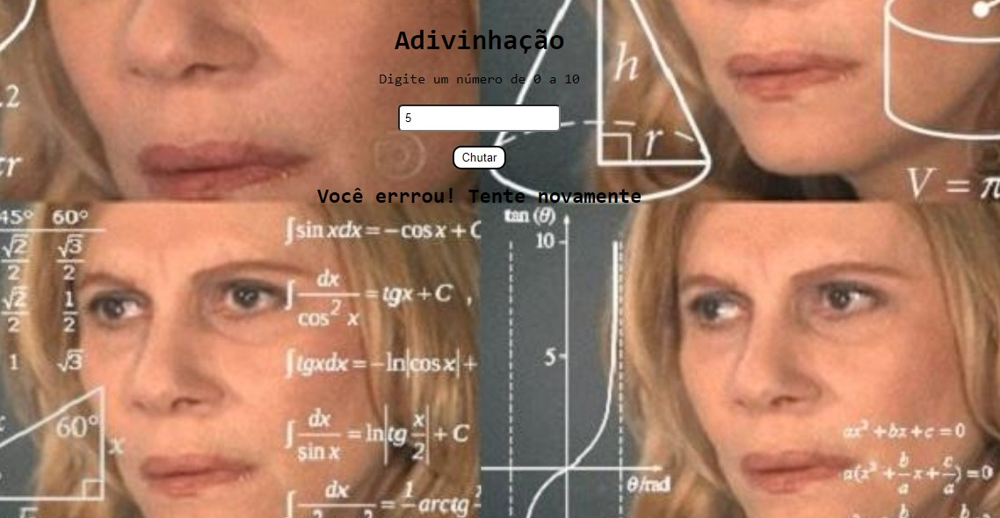

SOBRE MIM
Olá, mundo! Me chamo Maria Clara, nasci no dia 30 de janeiro de 2004 e tenho 18 anos. Nascida e criada em Recife/PE, amo tudo que minha cidade proporciona (bairrista sim!). Sou apaixonada pelas praias, amo visitar os cantinhos culturais por aqui e, de fato, viver a cultura. Atualmente, sou estudante do primeiro período de Ciência da Computação na Universidade Federal de Pernambuco. Decidi me aventurar na área da programação quando me vi, no ano do vestibular, completamente sem direção e, felizmente, acabei me encontrando nessa área e pretendo conhecer cada vez mais desse mundo :)
HOBBIES
Minha vida é e sempre foi movida a música. Sempre que eu puder eu vou estar ouvindo música. Aprendi a tocar violão e ukulele e, sempre que tenho um tempinho sobrando, tento aprender novas músicas. Mas, se me perguntarem qual meu estilo musical favorito, sou completamente incapaz de escolher só um! Além da música, adoro ver filmes, séries e ler livros de romance, dos mais água com açúcar possível (sempre bom ter uma fuga da realidade) aos grandes clássicos. Amo estar rodeada de pessoas, então meu passatempo favorito é sair com meus amigos ou com a minha família, não importa pra onde!
FORMAÇÃO E CURSOS
- Ensino Fundamental II e Ensino Médio: Escola de Aplicação do Recife - FCAP/UPE (2015 - 2021)
- Graduanda em Ciência da Computação: Centro de Informática - Universidade Federal de Pernambuco (2022 - Atualmente)
- Curso de Extensão Universitária na modalidade de Difusão: Projeto Codifique - Universidade de São Paulo - modalidade online (2021)
(Ver certificado) - Maratona de Programação VI Edição da Kenzie Academy (2022)
(Ver certificado) - ImersãoDev 4 Alura (2022)
PROJETOS

PONG GAME
(CÓDIGO)

CALCULADORA DE MÉDIA
(CÓDIGO)

ADIVINHAÇÃO
(CÓDIGO)
CONFIRA OUTROS PROJETOS NO MEU GITHUB!